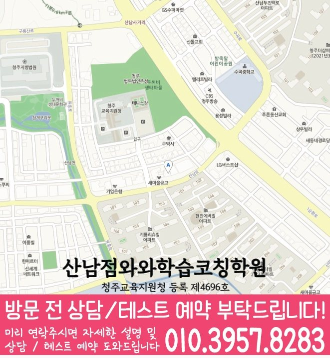

와와학습코칭센터 산남점
충청북도 청주시 서원구 산남동 산남로 18 이화빌딩 5층
GRADE 5 ENGLISH LOCAL GUIDE
와와학습코칭센터 산남점의 위치와 과목별 가능 학년을 확인하고, 초5 영어 상담에 필요한 학교·학습 자료를 준비해 보세요.
와와학습코칭센터 산남점의 영어 가능 학년 안내: 초5. 현재 수업 시간·반 편성·정원은 상담에서 확인해 주세요.
충청북도 청주시 서원구 산남동 산남로 18 이화빌딩 5층
현재 반 편성과 시간표는 상담에서 확인
청주교육지원청 등록 제4696호
통합 상담 전화 010-6839-8283 · 문의할 때 와와학습코칭센터 산남점과 학생의 학년을 말씀해 주세요.
교습비 자료의 과목·수업 시간·횟수와 별도 비용을 상담 내용과 함께 확인해 주세요.
하나로마트 옆, 1층 조은약국이 있는 이화빌딩 5층으로 안내돼 있습니다.
방문 주소: 충청북도 청주시 서원구 산남동 산남로 18 이화빌딩 5층
평균 오픈 안내 평일 오후 2시 이후
주말 수업 안내 토요일가능, 일요일가능
안내 자료의 운영 정보입니다. 현재 방문 시간과 과목별 반 편성은 예약할 때 확인해 주세요. 건물 내 상점과 시설 모습은 촬영·안내 시점에 따라 달라질 수 있습니다.


와와학습코칭센터 산남점 방문을 문의할 때 학생의 학년과 희망 과목을 알려 주세요. 통합 상담 010-6839-8283
아래는 가정에서 활용하는 일반 학습 점검 예시입니다. 현재 학교·교재에서 배우는 내용에 해당할 때 활용하고, 아직 배우지 않은 내용은 현재 진도에 맞춰 확인해 주세요. 학생의 학습 수준과 센터의 실제 수업 구성은 상담에서 확인할 수 있습니다.
누가 무엇을 하는지 짧은 문장에서 찾을 수 있나요?
직접 확인할 예 Mina reads a book.에서 Mina는 행동의 주체이고 reads는 행동입니다. 낱말 순서를 바꿨을 때 뜻이 자연스러운지 확인해 보세요.
현재 교재의 시간 표현과 행동을 나타내는 말을 연결했나요?
직접 확인할 예 I play soccer on Sundays.에서 on Sundays는 언제 하는지를 알려 줍니다. 행동과 시간 정보를 다른 색으로 표시해 보세요.
문장 사이에서 이유를 나타내는 말을 찾아 설명할 수 있나요?
직접 확인할 예 I wear a coat because it is cold.에서 코트를 입는 이유를 찾아보세요. because 뒤 내용을 자신의 말로 설명해 보세요.
틀린 문항의 근거 문장, 모르는 낱말, 읽기 어려운 구문을 나누어 적어 보세요. 정답만 베끼지 말고 오답을 고른 이유와 다시 읽어 찾은 근거를 짧게 기록해 주세요.
교재 이름·쪽수와 혼자 해결한 부분을 함께 표시하면 상담에서 현재 학습 상태를 설명하기 쉽습니다.
제공 자료의 초등학교 참고 목록: 샛별초등학교, 수곡초등학교, 청주교육대학교부설초등학교, 한솔초등학교.
학교 목록은 지역 참고 자료입니다. 해당 학교별 반 운영이나 시험 대비 수업을 확인한 정보는 아닙니다. 학생이 사용하는 교재, 실제 과목명·진도, 시험 범위 안내와 최근 오답을 준비해 주세요.
읽기·어휘·문장 쓰기 중 먼저 점검할 부분, 독해 답의 근거를 확인하는 방법, 고친 문장을 다시 확인하는 방법을 질문해 보세요.
위의 센터 정보에 적힌 가능 학년을 확인하고 현재 시간표·반 편성·과목 범위를 문의해 주세요. 이 질문과 학습 예시는 센터의 확정된 수업 방식이나 제공 서비스를 뜻하지 않습니다.
와와학습코칭센터 산남점의 영어 가능 학년 안내: 초5. 현재 수업 시간·반 편성·정원은 상담에서 확인해 주세요.
학교 참고 목록은 샛별초등학교, 수곡초등학교, 청주교육대학교부설초등학교, 한솔초등학교입니다. 학교별 전용 반 개설 여부는 별도로 확인해 주세요. 재학 학교와 학년을 알려 주고 학교 학습지, 단원평가 자료와 사용하는 교재를 바탕으로 상담할 수 있습니다.
상담 항목을 정리하는 초5 영어 상담에서는 맞고 틀린 결과보다 학생이 받은 설명과 다음 행동이 분명한지 확인하세요. 학습 기록에 ‘교과서 문장 하나의 시제나 주어를 바꾸고 달라진 형태를 확인해 보기’의 실행 여부와 다음 확인일을 함께 남기면 가정에서도 흐름을 살펴볼 수 있습니다.
센터의 교습비 자료와 상담에서 과목·횟수·수업 시간을 대조해 주세요. 교재비 등 별도 비용, 결석 시 보강 기준과 과제 피드백 방식도 함께 확인하면 좋습니다.
CONSULTATION SCENARIO
아래 두 장면은 초5 영어 상담 전에 준비할 자료와 질문을 정리한 점검 예시입니다.
가정 상담 장면: 수곡동의 한 학부모가 최근 자료 가운데 누적 오답과 복습 계획에서 막힌 문제와 독해 흐름과 답의 근거 관련 학습 기록을 나눠 가져오고, 초5 영어 상담에서 제안받을 첫 주 확인 항목과 다음 점검일을 질문하는 상황을 가정할 수 있습니다. 이 초5 영어 상담 장면은 실제 이용 후기나 특정 학생의 성과가 아니며, 상담 준비용 가상 예시입니다. 수곡동에서 초5 영어를 공부하는 학생의 학습 결과는 출발점과 실천 정도에 따라 달라질 수 있습니다.
비교 상담 장면: 수곡동에서 초5 영어를 공부하는 학생의 학교 일정과 통학 가능 시간을 적어 두고 와와학습코칭센터 산남점에서 문법의 문장 적용 관련 기록을 확인하는 방식, 과제 조절 기준, 학부모 공유 항목을 묻는 장면을 생각해 볼 수 있습니다. 이 초5 영어 상담 장면에서 비교할 항목은 학생의 실제 자료와 가능한 일정에 맞춰 조정해야 합니다.


와와학습코칭센터 산남점의 위치와 수곡동 생활권을 기준으로 초5 영어 상담 정보를 확인합니다. 방문 전 실제 이동 동선과 상담 가능 시간을 함께 확인해 주세요.